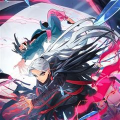
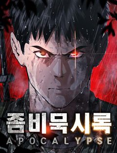
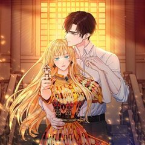
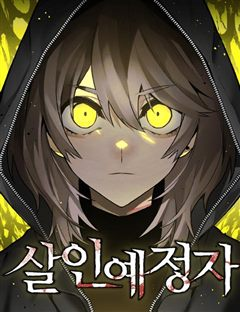
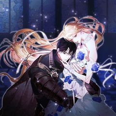

스릴러·공포 어둡고 자극적인 웹툰 추천 TOP 30
스릴러·공포 작품 중에서 자극적인, 다크판타지, 시리어스, 악역이주인공 같은 요소가 들어간 작품만 골랐어요. 네이버웹툰·카카오웹툰·레진코믹스에서 조건에 맞는 작품 77개 중 인기 순으로 30개를 골랐어요. 인기 TOP 3: 악역의 엔딩은 죽음뿐, 똑 닮은 딸, 내가 버린 개에게 물렸을 때
2026-09-29 기준 · 성인 작품 제외
내 취향으로 더 좁혀서 추천받기 →-
1
 카카오웹툰
카카오웹툰악역의 엔딩은 죽음뿐
역하렘 공략 게임의 악역, 에카르트 공작가의 하나뿐인 공녀이자 입양아 페넬로페로 빙의했다. 그런데 하필 난이도는 극악! 뭘 해도 엔딩은 죽음뿐! ‘진짜 공녀’가 나타나기 전에 여주의 어장 중 한 명을 공략해서 살아남아야 한다. 사사건건 시비를 거는 오빠 1, 2. 모든 루트가 죽음으로…
스릴러·공포자극적인서스펜스로판빙의카카오웹툰에서 보기 → -
2
 네이버웹툰
네이버웹툰똑 닮은 딸
'우리 엄마가 살인마인 것 같다.' 성적 우수, 품행 단정, 모범적인 자식인 길소명은 엄마가 요구하는 기준에 맞춰 완벽한 딸로 살아왔다. 그러나 남동생이 강물에서 시체로 떠오른 그 날, 소명의 머릿속엔 섬뜩한 의혹이 피어오른다. 자식의 인생에 방해되는 모든 것을 없애려는 엄마와 그녀에…
스릴러·공포자극적인시리어스고자극드라마입시네이버웹툰에서 보기 → -
3
 카카오웹툰
카카오웹툰내가 버린 개에게 물렸을 때
윈터 공작가에선 개를 기른다. 주인에게 늘 순종하는 검은 개를.. 윈터가의 공녀, 이블린 윈터. 자신만을 따르던 개, 길라스 블랙을 잔인하게 내쫓는다. “저를 사랑하신다고 하시지 않았습니까.” “사랑? 그 말을 믿었어? 버러지 같은 게 주제도 모르고..” ”이 순간을 후회하시게 될 겁…
스릴러·공포자극적인미스터리로판고자극로맨스카카오웹툰에서 보기 → -
4
 카카오웹툰
카카오웹툰누군가 내 몸에 빙의했다
본 작품은 가상의 세계관 및 허구의 인물을 다루고 있습니다. 또한 가상의 세계이므로 현대 한국과 풍습/시대상이 다르니 감상에 참고 부탁드립니다. *작품 내 등장하는 한의학 지식은 소설에 맞추어 재구성, 각색되었습니다* -------------------------------------…
스릴러·공포고자극드라마서스펜스로판카카오웹툰에서 보기 → -
5
 네이버웹툰
네이버웹툰쪽팔려게임
고등학교 2학년 유사랑은 반에서 묘한 취급을 받는다. 같은 반 친구들의 쪽팔려게임에서 놀이에 껴있지도 않은 유사랑이 자꾸 벌칙의 대상이 된다. 반 친구들도 유사랑의 인격이 어딘가 어긋나 있는 걸 어렴풋이 느끼기 때문이다.
스릴러·공포자극적인시리어스고자극드라마우정네이버웹툰에서 보기 → -
6
 네이버웹툰
네이버웹툰귀촌리
평범한 시골 마을 '귀촌리'를 찾은 '허무명'. 그는 돌아가신 할머니의 빈 집에 조용히 숨어든다. 그런데 집이 이상하리만큼 깔끔하다. 할머니가 돌아가신 건 3년 전인데? 어쩐지 마을 사람들은 이방인 무명의 방문을 달가워 하는 것 같지 않다. 아니, 실은 경계하는 것 같다. 그리고 그…
스릴러·공포자극적인시리어스고자극스릴러피카레스크네이버웹툰에서 보기 → -
7
 네이버웹툰
네이버웹툰미래의 골동품 가게
남해의 먼 섬에 살고 있는 소녀, '미래'. 미래의 부모님이 바다에서 돌아오지 못한 그날부터, 모든 것들이 변하기 시작했다. 저주를 풀기 위한 단 한 가지의 방법. 소중한 것들을 지키기 위한 기묘한 소녀의 퇴마가 시작된다.
스릴러·공포시리어스오컬트판타지현대동양네이버웹툰에서 보기 → -
8
 네이버웹툰
네이버웹툰벙커의 낮
어릴 적 벙커에 데려간 ‘원혁’을 내친 ‘서우’. 이후 고등학생이 된 서우는 고립된 삶에 극단적인 시도를 하던 중, 또 다른 벙커를 발견하고 들어간다. 그러나 피 칠갑인 채 들어온 ‘원혁’에 의해 갇히게 되는데...
스릴러·공포자극적인순애남감성적인첫사랑네이버웹툰에서 보기 → -
9
 카카오웹툰
카카오웹툰후작가의 역대급 막내아들
명망있는 후작가의 막내아들 잭 발란티에. 남들 보다 못한 가족들 사이에서 유일하게 의지했던 건 누나 뿐! 가문 따위야 멸문을 하든 말든 미련이 없었지만, 누나의 죽음이 헛된 희생인 걸 알게 된 후, 오로지 복수만을 위한 검귀가 되었다. 마침내 서대륙을 지배하는 돌칸 제국을 무너뜨리고,…
스릴러·공포복수극서스펜스카카오웹툰에서 보기 → -
10
 네이버웹툰
네이버웹툰종말에서 살아남기
평생 지하실에 감금되어 훈련받은 소년. 그리고 그를 가둔 미치광이 아빠가 하는 말 "종말이 온다." 지금껏 수없이 반복해온 훈련과 생존 지식으로 종말에서 살아남아야만 한다.
스릴러·공포시리어스생존크리처액션네이버웹툰에서 보기 → -
11

-
12
 네이버웹툰
네이버웹툰클래스메이트
"내가 친구가 되어줄게." 왕따 소녀 주은하에게 찾아온, 섬뜩한 귀신 소년 이해수. 위험한 우정을 받아들인 순간 은하 주위에 예기치 못한 사건들이 벌어지는데... 정체불명의 친구가 내민 이 손은 과연 구원일까, 아니면 저주일까?
스릴러·공포복수극로맨스릴러미스터리공포네이버웹툰에서 보기 → -
13
 네이버웹툰
네이버웹툰흉가에 들어가면 안되는 이유
밝은 세상은 어떤 모습일까? '이현'의 세상은 흉측한 귀신과 영혼이 남기고 간 검은 덩어리로 가득하다. 평범한 삶을 살기위해 애써 그것들을 모른척하던 현의 앞에 흉가만 찾아다니는 이상한놈이 나타나는데... 위험천만한 그곳에서 우리는 무사히 빠져나갈수 있을까?
스릴러·공포다크판타지공포오컬트학원물네이버웹툰에서 보기 → -
14카카오웹툰
튜토리얼이 너무 어렵다
우연히 튜토리얼의 세계로 들어가게 된 전직 프로게이머 이호재. 튜토리얼에서 살아남기 위해서 처절한 노력을 하는 주인공은 주어진 미션을 클리어 해나가면서 튜토리얼의 비밀을 알게되는데... 튜토리얼을 넘어서 적극적으로 자신의 삶과 세계를 변화시켜 나가는 성장물.
스릴러·공포자극적인서스펜스학원물게임판타지카카오웹툰에서 보기 → -
15
 네이버웹툰
네이버웹툰수상한 다이어트 클럽
모태 통통 ‘고양순’은 부모님의 등쌀에 못이겨 박박사 다이어트 클럽에 입소한다. 어딘가 수상해 보이는 박박사지만, 그녀의 이력 만큼은 누구보다 확실하다. 성공률 100%를 자랑하는 이곳의 퇴소 조건은 단 하나, ‘목표 체중을 다 감량해야만 하는 것!' 과연 100kg가 넘는 양순 역시…
스릴러·공포고자극스릴러바디 호러인생역전미스터리네이버웹툰에서 보기 → -
16카카오웹툰
나의 황제께 붉은 월계수 꽃을
전무후무한 무신의 딸이자, 토르티아 제 1공주인 로엘 네아레스. 부모를 모두 잃고 적국 카이로스에 팔려오듯 시집 왔다. 하지만 그 모든 것은 그녀의 ‘선택’이었다. 카이로스 황제와의 첫날밤. “제 조국, 북방의 토르티아를 당신께 바치겠나이다.” 그녀는 제 앞의 황금빛 눈동자를 가진 황…
스릴러·공포복수극미스터리로판카카오웹툰에서 보기 → -
17
 네이버웹툰
네이버웹툰죽었는데 왜 집착하세요
결혼식 당일, 내 연인과 친구가 바람이 났다. 두 사람의 배신에 나는 죽었고, 다시 눈을 떴을 때는 과거로 회귀했다. 이건 신이 내린 축복이니 정당하게 복수할 기회가 주어졌다고 생각했다. 하지만……이 회귀가 끝나지 않는다. 복수에 실패하면 그들의 배신에 죽었고, 복수에 성공하면 사고로…
스릴러·공포시리어스복수극서양왕족/귀족네이버웹툰에서 보기 → -
18

네이버웹툰좀비묵시록 82-08
탕-! 의문의 선박 속 '그것'으로부터 시작된 괴이한 전염병은 서울을 죽음의 도시로 만들어버린다. 예고 없이 닥쳐온 심판의 그날부터 세상의 모든 질서는 완전히 리셋되었다. 처절한 생존 경쟁 속에서 프로젝트명 [좀비묵시록 82-08]이 시작된다.
스릴러·공포자극적인시리어스절망적인현대네이버웹툰에서 보기 → -
19
 네이버웹툰
네이버웹툰괴이현상 하나
괴이현상 규칙 하나, ?̵̡͖̺̮͚̱͚̿͛̋͌̑͡?̢̨̲̤̞͙̟̌̏́̒̔̎̅͌͠͝?̴̰̭̭͉̬͙̲̄̀̐̿͐͋͛͡͠?̧͖͈̮̞̯̯̟̲̒̏̒͘͘͠을 잊지 마세요. 괴이현상 규칙 둘, 중심부 ?̭̠͙̖̹̪͎͗̒̒̋͒͠?̸̫͈̯͉̝̰͇́̒̀̏́͂͛͟͠을 찾으세요. 괴이현상 규칙 셋, ?͗̒̒…
스릴러·공포자극적인시리어스고자극스릴러비쥬얼쇼크네이버웹툰에서 보기 → -
20
 네이버웹툰
네이버웹툰유령의 노래
어렸을 때부터 환청을 듣는 병을 앓아왔던 노아. 어느 날 의문의 살인사건이 일어나고, 환청은 범인을 알고 있다며 노아에게 속삭인다. 진실을 알 수 없어 혼란스러워하는 그녀의 주변에 이상한 일이 일어나기 시작한다.
스릴러·공포시리어스고자극스릴러서양미스터리네이버웹툰에서 보기 → -
21

카카오웹툰남주를 죽여보겠습니다
로판 소설을 읽고 몸이 아파오던 나 권진하. 여주인공 엘비가 느끼는 감정과 감각이 모두 연결되어버렸다. 끔찍한 통증과 슬픔에 병원까지 찾아갔지만 몸에는 이상무. 결국 소설 작가에게 메일을 보냈다. 제발 쓰레기 남주가 여주 좀 그만 괴롭히게. 하지만 메일을 보냈더니 사이다 답장은커녕….…
스릴러·공포자극적인서스펜스로판빙의카카오웹툰에서 보기 → -
22
 카카오웹툰
카카오웹툰괴공유록
불의의 사고로 의식을 잃었다가 잠에서 깼을 땐, 삼십 년이란 세월이 훌쩍 지난 뒤였다. 그 사이 사문인 백검문은 쇠락의 길을 걷다 무림 세력에게 멸문지화를 당했으며 사형이자 장문인이었던 진영림이 비명 했다는 비보를 듣게 되는데… 존재 자체만으로도 강호 무림이 숨을 죽인 존재였던, 검공…
스릴러·공포복수극사이다미스터리액션카카오웹툰에서 보기 → -
23카카오웹툰
그 악녀가 검을 든 이유
“마님이 전해달란다. 곧 네 가족들도 네 뒤를 따라가게 될 거라고.” 새어머니의 오랜 학대와 모함 끝에 살해당했다. 모든 게 끝이라고 생각했건만 두 번의 환생 후 원래의 나, 희대의 악녀로 알려진 '에린 리서스'로 회귀하게 되었다. 모든 걸 잃고, 사랑하는 사람마저 떠나보내기 전으로.…
스릴러·공포복수극미스터리로판카카오웹툰에서 보기 → -
24
 네이버웹툰
네이버웹툰당신의 가격을 알려드립니다
「모든 인간에게 가격이 매겨지는 세상, ‘0원’이 되면... 죽는다!」 전 세계 사람들의 휴대폰에 인간의 가격을 매기는 바이러스 앱이 깔렸다. 평균 100만원대 이상은 달리는 보통의 사람들 사이에서 “2,500원”이란 헐값으로 매겨진 주인공 고고희. “나 죽고 싶지 않아. 도대체 사람…
스릴러·공포고자극드라마현대판타지네이버웹툰에서 보기 → -
25
 네이버웹툰
네이버웹툰빌런의 프로파일러
살인자로부터 엄마를 잃고, 사고를 당한 아이 이신혁. 여러 지식과 학습할 수 있는 신비한 공간에서 15년간 지식을 쌓은 뒤, 한 달 만에 코마 상태에서 깨어나게 된다. 15년간 쌓은 지식과 능력으로 사람을 위협하는 존재들과 죽은 자의 억울함을 풀어주는 천재 프로파일러가 되어가는, 프로…
스릴러·공포시리어스고자극스릴러범죄직업드라마네이버웹툰에서 보기 → -
26
 네이버웹툰
네이버웹툰새동네
오갈 데 없는 노인들이 산간벽지를 개간해 작은 마을 공동체를 이루며 살기 시작하였으니, 이름하여 새동네! 어느 날, 새동네 일대가 신도시 재개발에 휩싸이고 부정한 세력들이 들어오자 마을의 평화와 존립을 위해 결국 노인들이 나서며 경고하는데…... “잠 자는 사자의 코털은 건드는 게 아…
스릴러·공포고자극스릴러액션참교육범죄네이버웹툰에서 보기 → -
27

네이버웹툰살인예정자
"네 숫자가 보인다. 네가 앞으로 몇 명을 죽일지가." 죽이기 전에 죽여버리면 살인은 일어나지 않는다. 그 일념 하에 ‘살인예정자’들을 하나씩 처단해가는 연쇄살인마 넘버. 살인을 통해 살인 없는 세상을 만들겠다는 그의 바람은 이루어질 수 있을까?
스릴러·공포시리어스고자극스릴러범죄다크히어로네이버웹툰에서 보기 → -
28

카카오웹툰네 목을 비트는 새벽
[사랑이라 믿었다. 그가 내 심장을 꿰뚫기 전까지는.] 노예인 어미의 피를 이어받았다는 이유로 누구에게도 존중받지 못했던 왕국의 공주, 아르시노에. 그녀는 제국의 황태자 알레한드로와의 결혼으로 인생이 달라질 거라 믿었다. 사랑받는 아내로, 존경받는 황후로, 행복한 삶이 시작될 줄 알았…
스릴러·공포복수극서스펜스로판카카오웹툰에서 보기 → -
29
 네이버웹툰
네이버웹툰원더랜드
"이곳에선 환상이 현실이 됩니다! 죽지 않고 살아남는다면" 주인공은 실종된 딸의 행방을 쫓아 기괴한 놀이공원에 도달한다. 그런 그 앞에 나타난 인형 탈을 쓴 괴물은 딸을 찾고 싶다면 놀이공원에서 게임을 해서 살아남아야 한다고 말한다. 사라진 딸을 찾기 위해 놀이공원에 준비된 죽음의 게…
스릴러·공포자극적인비쥬얼쇼크게임생존네이버웹툰에서 보기 → -
30
 네이버웹툰
네이버웹툰기생번식
스릴러 대가 <꼬리잡기> 바쉬 작가 신작. 근원을 알 수 없는 기이한 현상을 겪게 된 세 사람. 덕분에 세 사람은 원하던 모든 것을 얻게 되지만… 처음엔 즐거움만 선사하던 그것이 점점 그들의 일상, 그들의 생사까지 지배하려 한다는 사실을 깨닫는다. '그것'의 목적은 무엇일까. 행운의…
스릴러·공포자극적인다크판타지고자극드라마바디 호러네이버웹툰에서 보기 →